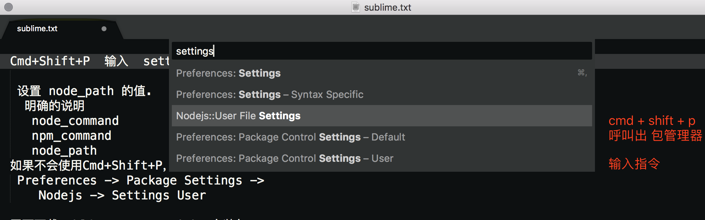
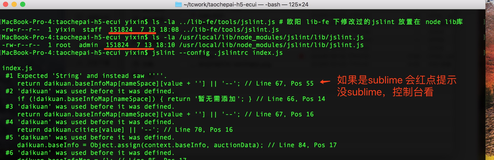

下载安装 sublime
内网下载(mac版本) Sublime Text 3
sublime-text 请安装3148以上的版本，不然提示信息没有颜色 (指css语法检查、js代码检查)
安装版本的，请在hosts文件增加
0.0.0.4 sanfrancisco.kapeli.com london.kapeli.com kapeli.com
否则过一段时间，会提示 unregister， 对于有dnsmasq 之类dns解析服务的，可以把 kapeli.com 全部解析到 快速 不可达的IP上
>>> ## 适用于 MAC 电脑的
>>> ## 增加快捷方式 唤起 subl ，以后在终端，需要编辑哪个文件
>>> ## 直接subl xxx.js ， 不需要 vim xxx.js 了
>>> cd /usr/local/bin
>>> ln -s "/Applications/Sublime Text.app/Contents/SharedSupport/bin/subl"
默认Mac中 node会安装到 /usr/local/bin/node
如果是 HomeBrew型安装，会有符号链接 到具体的node，例如 /usr/local/Cellar/node/9.3.0/bin/node
而全局的node lib 会位于 /usr/local/lib/node_modules/
如果不在默认路径，请设置PATH， 使得从 $PATH 中找到 node
如果您懂得自行修改 node、 设置 NODE_PATH 环境变量等技能，说明您有把握自行确保Mac中各类软件的协作，那么请自检查 env 确保对 sublime 以及工程项目都能用上适当的 node 库
构建服务器上采用的 node/v9.3.0 npm/6.1.0 如果希望尽量减少和构建服务器的差异，可以安装同样的版本已消除不确定性
构建服务器上 ~/.npmrc 中设置了如下项， 你在本机也可以参考配置，下面配置项主要是使用taobao镜像站，减少（从国际网络）下载可能特别慢这些状况。
请注意，不要把 filepath 、binary_path 之类的目录位置原封不动的照抄！ 根据你实际情况来填写
>>> cat ~/.npmrc
loglevel=warn
registry = https://registry.npm.taobao.org
chromedriver_filepath=/home/xxxdir/.node_modules/chromedriver/lib/chromedriver/chromedriver_linux64.zip
# sass_binary_path=/home/xxxdir/.node_modules/node-sass/vendor/linux-x64-48/binding.node
phantomjs_cdnurl=http://npm.taobao.org/mirrors/phantomjs
一般情况下可以通过 下面指令查看你当前的 npm 预置情况
>>> npm config list
>>> npm config ls -l
>>> npm config ls -l |grep "特征词" # 仅查看符合特征串的 配置项
1. 下载安装Sublime Text 3 或者内网下载
2. 安装Package Control
https://packagecontrol.io/installation#st3
在sublime text中打开命令行（快捷键 Ctrl+~ / control+~），copy以下对应命令，粘贴在命令行中，按回车键运行
Sublime Text 3 ：
import urllib.request,os,hashlib; h = 'df21e130d211cfc94d9b0905775a7c0f' + '1e3d39e33b79698005270310898eea76'; pf = 'Package Control.sublime-package'; ipp = sublime.installed_packages_path(); urllib.request.install_opener( urllib.request.build_opener( urllib.request.ProxyHandler()) ); by = urllib.request.urlopen( 'http://packagecontrol.io/' + pf.replace(' ', '%20')).read(); dh = hashlib.sha256(by).hexdigest(); print('Error validating download (got %s instead of %s), please try manual install' % (dh, h)) if dh != h else open(os.path.join( ipp, pf), 'wb' ).write(by)
2-1 从此可以使用 CMD + Shift + P 呼叫出 包管理；快捷键： ⌘ ⇧ P
2-2 建议安装上Nodejs 并为sublime3增加 SublimeText-Nodejs 这个Package
Install Node.js packages FROM https://github.com/tanepiper/SublimeText-Nodejs
2-3 如果node不在默认路径，也不能从 $PATH 中找到 node ，那么请在sublime 设置
Preferences -> Package Settings -> Nodejs -> Settings User

前置假定 node 和 sublime 都安装好，从环境中可以找到node (无论是位于 /usr/local/bin/node 还是PATH中能找到)
>>> npm install jslint@0.12.0 -g ### js 代码检测器 node-jslint version: 0.12.0 JSLint edition 2013-08-26; 稍后需用欧阳改造后的 lib/jslint.js
>>> npm install lesshint@5.1.0 -g ### css 检测器
>>> npm install less@2.7.3 -g ### css 语法高亮 lessc
>>> npm install less-plugin-clean-css@1.5.1 -g ### lessc 插件
安装完jslint后，找到安装路径（mac下默认安装路径：/usr/local/lib/node_modules），使用lib-fe项目下的lib-fe/tools/jslint.js替换掉安装的jslint中lib目录下的jslint.js文件（ /usr/local/lib/node_modules/jslint/lib/jslint.js）
>>> cd ~/workspace/xxx/lib-fe/tools/ ## 此2步骤核实 你工程项目下用的是 欧阳改造过的 jslint lesshint
>>> ls -la ## 注意观察 存在 lesshint 目录； jslint.js 等等
### 到 默认的 node lib 全局库位置下 ，用欧阳改造过的 jslint lesshint
>>> cd /usr/local/lib/node_modules/jslint/lib ### 如果目录不存在，说明你没有 npm install jslint -g
>>> cp ~/workspace/xxx/lib-fe/tools/jslint.js . ### 采用改造过的jslint 如果提示是否替换，请选 是
参见 https://github.com/mishoo/UglifyJS2/tree/harmony
各位同事请知悉一下， js的压缩混淆工具，目前在 构建服务器上版本是 uglify-es@3.3.9
注意，它并不是 uglify-js ， 而是支持es6+语法的 UglifyJS2
>>> npm install uglify-es@3.3.9 -g
>>> uglifyjs --version
##输出的应是
##uglify-es 3.3.9 ### 注意！不是 uglify-js 3.3.x
安装完成之后，应有符号链接 从 /usr/local/bin/uglifyjs 同名指向
/usr/local/lib/node_modules/uglify-es/bin/uglifyjs
使用 Sublime 的，请配置 jslint 和 css 检测器
给Sublime安装 SublimeLinter、SublimeLinter-contrib-jslint编辑器插件
- 快捷键： ⌘ ⇧ P 调出package control（ctrl+shift+p / command+shift+p）
搜索SublimeLinter进行安装
- 快捷键： ⌘ ⇧ P 调出package control（ctrl+shift+p / command+shift+p）
搜索jslint安装即可，全名：SublimeLinter-contrib-jslint
搜索 contrib-lesshint 安装 css 检测器
常见的错误问题 （sublime3 没能成功的唤起 jslint ）
关于这里，可以参见 http://www.sublimelinter.com/en/latest/troubleshooting.html#finding-a-linter-executable
打开命令行control+~ ， 观察命令行的信息 （每种 sublime-package 一般是python程序）
观察到
WARNING: jslint cannot locate 'jslint' ，意味着没有办法从环境中定位到 jslint
于是配置 告知PATH 增加下 /usr/local/bin
出错信息
PATH:
/usr/bin
/bin
/usr/sbin
/sbin
SublimeLinter: #1 SublimeLinter.sublime-package: WARNING: jslint cannot locate 'jslint'
## 关于这里，可以参见 http://www.sublimelinter.com/en/latest/troubleshooting.html#finding-a-linter-executable
## Debugging PATH problems
2018-06-29 补充：
增加了css属性顺序与indent的检查
使用lib-fe项目下的lib-fe/tools/lesshint/
sublime下 项目文件夹下没有 .jslintrc 文件 自定义的jslint检查不会生效
所以需要copy .jslintrc文件 到sublime打开项目的根目录下，这样就可以通过自定义的jslint检查语法了
注意，该问题的本质就是 jslint --config <这里指明的 .jslintrc文件> **/*js
由于--config 缺失，没明确把.jslintrc 文件的位置告知 , 如果你不是使用 Sublime 而是Atom或其他IDE，可能需要配置告知
cat /usr/local/lib/node_modules/jslint/bin/jslint.js
#!/usr/bin/env node
var main = require("../lib/main.js");
main.runMain(main.parseArgs());
## 修改后， 手工把 验证规则写明确到 Args里面
#!/usr/bin/env node
var main = require("../lib/main.js");
var argx = main.parseArgs();
argx.config = '/Users/yixin/tcwork/taochepai-h5-ecui/.jslintrc'; // 请具体指明 .jslintrc 文件位置
main.runMain( argx );
另外一种办法是，设置Linter 参见 http://www.sublimelinter.com/en/latest/linter_settings.html
http://www.sublimelinter.com/en/latest/settings.html
通过告知 linter working directory 或搭配设置 project settings
也可以通过
{
"args": "--config /路径/路径/.jslintrc"
}
对于不使用 sublime的同事，可以在控制台上做 同样的检测
